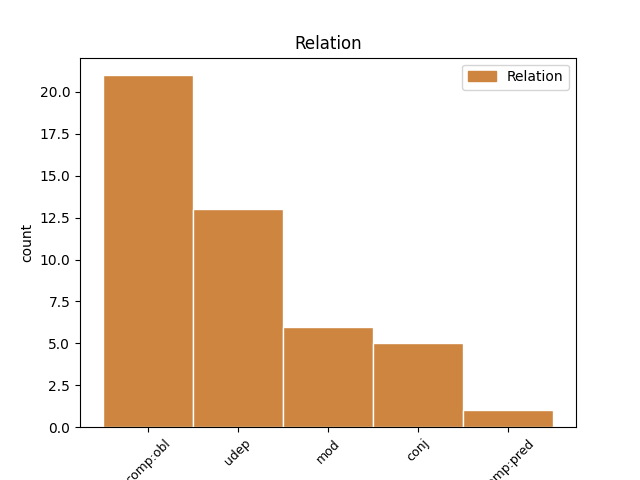
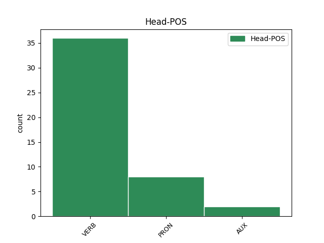
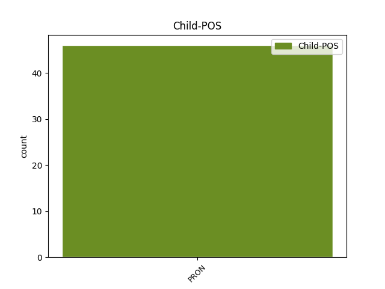

Distribution of features within this leaf



Agreement Rules sorted by frequency.
- When the dependent token is the oblique complements(comp:obl) of the head token, and the head token is VERB and the dependent token is PRON.
1 Vaikai _ _ _ _ 0 _ _ _
2 išmoksta _ _ _ _ 0 _ _ _
3 , _ _ _ _ 0 _ _ _
4 kaip _ _ _ _ 0 _ _ _
5 konstruktyviai _ _ _ _ 0 _ _ _
6 reikšti _ _ _ _ 0 _ _ _
7 pyktį _ _ _ _ 0 _ _ _
8 , _ _ _ _ 0 _ _ _
9 nes _ _ _ _ 0 _ _ _
10 jiems jis PRON įv.vyr.dgs.N. Case=Dat|Definite=Ind|Gender=Masc|Number=Plur|Person=3|PronType=Prs 13 comp:obl _ _
11 daug _ _ _ _ 0 _ _ _
12 kartų _ _ _ _ 0 _ _ _
13 tenka tekti VERB vksm.asm.tiesiog.es.3. Mood=Ind|Person=3|Polarity=Pos|Tense=Pres|VerbForm=Fin 0 _ _ _
14 suvaidinti _ _ _ _ 0 _ _ _
15 įprasto _ _ _ _ 0 _ _ _
16 gyvenimo _ _ _ _ 0 _ _ _
17 situacijas _ _ _ _ 0 _ _ _
18 , _ _ _ _ 0 _ _ _
19 kalbėti _ _ _ _ 0 _ _ _
20 apie _ _ _ _ 0 _ _ _
21 tai _ _ _ _ 0 _ _ _
22 , _ _ _ _ 0 _ _ _
23 dėl _ _ _ _ 0 _ _ _
24 ko _ _ _ _ 0 _ _ _
25 kilo _ _ _ _ 0 _ _ _
26 pyktis _ _ _ _ 0 _ _ _
27 , _ _ _ _ 0 _ _ _
28 ką _ _ _ _ 0 _ _ _
29 pagalvojo _ _ _ _ 0 _ _ _
30 , _ _ _ _ 0 _ _ _
31 ką _ _ _ _ 0 _ _ _
32 tada _ _ _ _ 0 _ _ _
33 darė _ _ _ _ 0 _ _ _
34 , _ _ _ _ 0 _ _ _
35 kokios _ _ _ _ 0 _ _ _
36 buvo _ _ _ _ 0 _ _ _
37 pasekmės _ _ _ _ 0 _ _ _
38 . _ _ _ _ 0 _ _ _
1 17 _ _ _ _ 0 _ _ _
2 . _ _ _ _ 0 _ _ _
3 Komiteto _ _ _ _ 0 _ _ _
4 posėdis _ _ _ _ 0 _ _ _
5 yra _ _ _ _ 0 _ _ _
6 teisėtas _ _ _ _ 0 _ _ _
7 , _ _ _ _ 0 _ _ _
8 jei _ _ _ _ 0 _ _ _
9 jame jis PRON įv.vyr.vns.Vt. Case=Loc|Definite=Ind|Gender=Masc|Number=Sing|Person=3|PronType=Prs 10 udep _ _
10 dalyvauja dalyvauti VERB vksm.asm.tiesiog.es.dgs.3. Mood=Ind|Number=Plur|Person=3|Polarity=Pos|Tense=Pres|VerbForm=Fin 0 _ _ _
11 ne _ _ _ _ 0 _ _ _
12 mažiau _ _ _ _ 0 _ _ _
13 kaip _ _ _ _ 0 _ _ _
14 2/3 _ _ _ _ 0 _ _ _
15 Komiteto _ _ _ _ 0 _ _ _
16 narių _ _ _ _ 0 _ _ _
17 . _ _ _ _ 0 _ _ _
1 Po _ _ _ _ 0 _ _ _
2 kelių _ _ _ _ 0 _ _ _
3 parų _ _ _ _ 0 _ _ _
4 Tu _ _ _ _ 0 _ _ _
5 ateisi _ _ _ _ 0 _ _ _
6 , _ _ _ _ 0 _ _ _
7 ir _ _ _ _ 0 _ _ _
8 aš _ _ _ _ 0 _ _ _
9 nustebsiu _ _ _ _ 0 _ _ _
10 dešimčia _ _ _ _ 0 _ _ _
11 skirtumų _ _ _ _ 0 _ _ _
12 tarp _ _ _ _ 0 _ _ _
13 Tavo tu PRON įv.vns.K. Case=Gen|Definite=Ind|Number=Sing|Person=2|PronType=Prs 14 mod _ _
14 Tavęs tu PRON įv.vns.K. Case=Gen|Definite=Ind|Number=Sing|Person=2|PronType=Prs 0 _ _ _
15 ir _ _ _ _ 0 _ _ _
16 mano _ _ _ _ 0 _ _ _
17 Tavęs _ _ _ _ 0 _ _ _
18 . _ _ _ _ 0 _ _ _
1 Po _ _ _ _ 0 _ _ _
2 kelių _ _ _ _ 0 _ _ _
3 parų _ _ _ _ 0 _ _ _
4 Tu _ _ _ _ 0 _ _ _
5 ateisi _ _ _ _ 0 _ _ _
6 , _ _ _ _ 0 _ _ _
7 ir _ _ _ _ 0 _ _ _
8 aš _ _ _ _ 0 _ _ _
9 nustebsiu _ _ _ _ 0 _ _ _
10 dešimčia _ _ _ _ 0 _ _ _
11 skirtumų _ _ _ _ 0 _ _ _
12 tarp _ _ _ _ 0 _ _ _
13 Tavo _ _ _ _ 0 _ _ _
14 Tavęs tu PRON įv.vns.K. Case=Gen|Definite=Ind|Number=Sing|Person=2|PronType=Prs 0 _ _ _
15 ir _ _ _ _ 0 _ _ _
16 mano _ _ _ _ 0 _ _ _
17 Tavęs tu PRON įv.vns.K. Case=Gen|Definite=Ind|Number=Sing|Person=2|PronType=Prs 14 conj _ SpaceAfter=No
18 . _ _ _ _ 0 _ _ _
1 Ir _ _ _ _ 0 _ _ _
2 gal _ _ _ _ 0 _ _ _
3 tai _ _ _ _ 0 _ _ _
4 būsi būti AUX vksm.asm.tiesiog.būs.vns.2. Mood=Ind|Number=Sing|Person=2|Polarity=Pos|Tense=Fut|VerbForm=Fin 0 _ _ _
5 tu tu PRON įv.vns.V. Case=Nom|Definite=Ind|Number=Sing|Person=2|PronType=Prs 4 comp:pred _ SpaceAfter=No
6 ? _ _ _ _ 0 _ _ _
1 Svarbu _ _ _ _ 0 _ _ _
2 ir _ _ _ _ 0 _ _ _
3 įdomu _ _ _ _ 0 _ _ _
4 būtų _ _ _ _ 0 _ _ _
5 pažvelgti _ _ _ _ 0 _ _ _
6 , _ _ _ _ 0 _ _ _
7 kaip _ _ _ _ 0 _ _ _
8 žanrus _ _ _ _ 0 _ _ _
9 , _ _ _ _ 0 _ _ _
10 jų _ _ _ _ 0 _ _ _
11 ypatybes _ _ _ _ 0 _ _ _
12 ir _ _ _ _ 0 _ _ _
13 klasifikaciją _ _ _ _ 0 _ _ _
14 veikia _ _ _ _ 0 _ _ _
15 elektroninė _ _ _ _ 0 _ _ _
16 spaudos _ _ _ _ 0 _ _ _
17 forma _ _ _ _ 0 _ _ _
18 , _ _ _ _ 0 _ _ _
19 kuo _ _ _ _ 0 _ _ _
20 laikraštis _ _ _ _ 0 _ _ _
21 internete _ _ _ _ 0 _ _ _
22 skiriasi _ _ _ _ 0 _ _ _
23 nuo _ _ _ _ 0 _ _ _
24 jo _ _ _ _ 0 _ _ _
25 kietosios _ _ _ _ 0 _ _ _
26 kopijos _ _ _ _ 0 _ _ _
27 , _ _ _ _ 0 _ _ _
28 ar _ _ _ _ 0 _ _ _
29 juose jis PRON įv.vyr.dgs.Vt. Case=Loc|Definite=Ind|Gender=Masc|Number=Plur|Person=3|PronType=Prs 30 udep _ _
30 yra būti AUX vksm.asm.tiesiog.es.dgs.3. Mood=Ind|Number=Plur|Person=3|Polarity=Pos|Tense=Pres|VerbForm=Fin 0 _ _ _
31 tos _ _ _ _ 0 _ _ _
32 pačios _ _ _ _ 0 _ _ _
33 rubrikos _ _ _ _ 0 _ _ _
34 , _ _ _ _ 0 _ _ _
35 kurių _ _ _ _ 0 _ _ _
36 rubrikų _ _ _ _ 0 _ _ _
37 nėra _ _ _ _ 0 _ _ _
38 , _ _ _ _ 0 _ _ _
39 o _ _ _ _ 0 _ _ _
40 kurios _ _ _ _ 0 _ _ _
41 kitaip _ _ _ _ 0 _ _ _
42 vadinasi _ _ _ _ 0 _ _ _
43 ? _ _ _ _ 0 _ _ _
Disagree Examples:
1 Dar _ _ _ _ 0 _ _ _
2 nėra _ _ _ _ 0 _ _ _
3 pakankamai _ _ _ _ 0 _ _ _
4 informacijos _ _ _ _ 0 _ _ _
5 ir _ _ _ _ 0 _ _ _
6 patikimų _ _ _ _ 0 _ _ _
7 mokslinių _ _ _ _ 0 _ _ _
8 įrodymų _ _ _ _ 0 _ _ _
9 , _ _ _ _ 0 _ _ _
10 kurie _ _ _ _ 0 _ _ _
11 mums aš PRON įv.dgs.N. Case=Dat|Definite=Ind|Number=Plur|Person=1|PronType=Prs 12 comp:obl _ _
12 leistų leisti VERB vksm.asm.tar.dgs.3. Mood=Cnd|Number=Plur|Person=3|Polarity=Pos|VerbForm=Fin 0 _ _ _
13 teigti _ _ _ _ 0 _ _ _
14 , _ _ _ _ 0 _ _ _
15 kad _ _ _ _ 0 _ _ _
16 genetiškai _ _ _ _ 0 _ _ _
17 modifikuoti _ _ _ _ 0 _ _ _
18 produktai _ _ _ _ 0 _ _ _
19 ir _ _ _ _ 0 _ _ _
20 iš _ _ _ _ 0 _ _ _
21 jų _ _ _ _ 0 _ _ _
22 gaminamas _ _ _ _ 0 _ _ _
23 maistas _ _ _ _ 0 _ _ _
24 yra _ _ _ _ 0 _ _ _
25 visiškai _ _ _ _ 0 _ _ _
26 nepavojingas _ _ _ _ 0 _ _ _
27 nei _ _ _ _ 0 _ _ _
28 aplinkai _ _ _ _ 0 _ _ _
29 , _ _ _ _ 0 _ _ _
30 nei _ _ _ _ 0 _ _ _
31 žmonėms _ _ _ _ 0 _ _ _
32 . _ _ _ _ 0 _ _ _
1 – _ _ _ _ 0 _ _ _
2 Ponia _ _ _ _ 0 _ _ _
3 , _ _ _ _ 0 _ _ _
4 bene _ _ _ _ 0 _ _ _
5 jumyse tu PRON įv.dgs.Vt. Case=Loc|Definite=Ind|Number=Plur|Person=2|PronType=Prs 7 udep _ _
6 granata _ _ _ _ 0 _ _ _
7 sprogo sprogti VERB vksm.asm.tiesiog.būt-k.vns.3. Aspect=Perf|Mood=Ind|Number=Sing|Person=3|Polarity=Pos|Tense=Past|VerbForm=Fin 0 _ _ _
8 ? _ _ _ _ 0 _ _ _
9 – _ _ _ _ 0 _ _ _
10 iškviestas _ _ _ _ 0 _ _ _
11 chirurgas _ _ _ _ 0 _ _ _
12 keiksis _ _ _ _ 0 _ _ _
13 patyliukais _ _ _ _ 0 _ _ _
14 , _ _ _ _ 0 _ _ _
15 bet _ _ _ _ 0 _ _ _
16 tu _ _ _ _ 0 _ _ _
17 vis _ _ _ _ 0 _ _ _
18 tiek _ _ _ _ 0 _ _ _
19 girdėsi _ _ _ _ 0 _ _ _
20 , _ _ _ _ 0 _ _ _
21 keiksis _ _ _ _ 0 _ _ _
22 , _ _ _ _ 0 _ _ _
23 bet _ _ _ _ 0 _ _ _
24 nekaltins _ _ _ _ 0 _ _ _
25 netikusių _ _ _ _ 0 _ _ _
26 kolegų _ _ _ _ 0 _ _ _
27 , _ _ _ _ 0 _ _ _
28 kurie _ _ _ _ 0 _ _ _
29 gimdyvę _ _ _ _ 0 _ _ _
30 paliko _ _ _ _ 0 _ _ _
31 likimo _ _ _ _ 0 _ _ _
32 valiai _ _ _ _ 0 _ _ _
33 , _ _ _ _ 0 _ _ _
34 o _ _ _ _ 0 _ _ _
35 ši _ _ _ _ 0 _ _ _
36 ėmė _ _ _ _ 0 _ _ _
37 ir _ _ _ _ 0 _ _ _
38 persistengė _ _ _ _ 0 _ _ _
39 , _ _ _ _ 0 _ _ _
40 nes _ _ _ _ 0 _ _ _
41 vaikais _ _ _ _ 0 _ _ _
42 nešaudoma _ _ _ _ 0 _ _ _
43 , _ _ _ _ 0 _ _ _
44 ponia _ _ _ _ 0 _ _ _
45 , _ _ _ _ 0 _ _ _
46 dabar _ _ _ _ 0 _ _ _
47 gulėkit _ _ _ _ 0 _ _ _
48 ramiai _ _ _ _ 0 _ _ _
49 , _ _ _ _ 0 _ _ _
50 pakentėkit _ _ _ _ 0 _ _ _
51 , _ _ _ _ 0 _ _ _
52 pakentėkit _ _ _ _ 0 _ _ _
53 , _ _ _ _ 0 _ _ _
54 kaip _ _ _ _ 0 _ _ _
55 nors _ _ _ _ 0 _ _ _
56 jus _ _ _ _ 0 _ _ _
57 sulopysiu _ _ _ _ 0 _ _ _
58 ... _ _ _ _ 0 _ _ _
1 – _ _ _ _ 0 _ _ _
2 Ponia _ _ _ _ 0 _ _ _
3 , _ _ _ _ 0 _ _ _
4 bene _ _ _ _ 0 _ _ _
5 jumyse tu PRON įv.dgs.Vt. Case=Loc|Definite=Ind|Number=Plur|Person=2|PronType=Prs 7 udep _ _
6 granata _ _ _ _ 0 _ _ _
7 sprogo sprogti VERB vksm.asm.tiesiog.būt-k.vns.3. Aspect=Perf|Mood=Ind|Number=Sing|Person=3|Polarity=Pos|Tense=Past|VerbForm=Fin 0 _ _ _
8 ? _ _ _ _ 0 _ _ _
1 Matai _ _ _ _ 0 _ _ _
2 adatą _ _ _ _ 0 _ _ _
3 , _ _ _ _ 0 _ _ _
4 šokinėjančią _ _ _ _ 0 _ _ _
5 aukštyn _ _ _ _ 0 _ _ _
6 žemyn _ _ _ _ 0 _ _ _
7 tarp _ _ _ _ 0 _ _ _
8 savo _ _ _ _ 0 _ _ _
9 šlaunų _ _ _ _ 0 _ _ _
10 , _ _ _ _ 0 _ _ _
11 bet _ _ _ _ 0 _ _ _
12 ne _ _ _ _ 0 _ _ _
13 dėl _ _ _ _ 0 _ _ _
14 akiniuoto _ _ _ _ 0 _ _ _
15 „ _ _ _ _ 0 _ _ _
16 gražuolio _ _ _ _ 0 _ _ _
17 “ _ _ _ _ 0 _ _ _
18 , _ _ _ _ 0 _ _ _
19 įsistebeilijusio _ _ _ _ 0 _ _ _
20 į _ _ _ _ 0 _ _ _
21 tavo _ _ _ _ 0 _ _ _
22 intymumą _ _ _ _ 0 _ _ _
23 , _ _ _ _ 0 _ _ _
24 neišleidi _ _ _ _ 0 _ _ _
25 nė _ _ _ _ 0 _ _ _
26 garso _ _ _ _ 0 _ _ _
27 – _ _ _ _ 0 _ _ _
28 tiesiog _ _ _ _ 0 _ _ _
29 jo _ _ _ _ 0 _ _ _
30 tavyje tu PRON įv.vns.Vt. Case=Loc|Definite=Ind|Number=Sing|Person=2|PronType=Prs 31 udep _ _
31 nėra nebūti VERB vksm.asm.neig.tiesiog.es.vns.3. Mood=Ind|Number=Sing|Person=3|Polarity=Neg|Tense=Pres|VerbForm=Fin 0 _ _ _
32 . _ _ _ _ 0 _ _ _
1 Jie _ _ _ _ 0 _ _ _
2 kalbasi _ _ _ _ 0 _ _ _
3 , _ _ _ _ 0 _ _ _
4 uždavinėja uždavinėti VERB vksm.asm.tiesiog.es.dgs.3. Mood=Ind|Number=Plur|Person=3|Polarity=Pos|Tense=Pres|VerbForm=Fin 0 _ _ _
5 tau tu PRON įv.vns.N. Case=Dat|Definite=Ind|Number=Sing|Person=2|PronType=Prs 4 comp:obl _ _
6 klausimus _ _ _ _ 0 _ _ _
7 ir _ _ _ _ 0 _ _ _
8 patys _ _ _ _ 0 _ _ _
9 į _ _ _ _ 0 _ _ _
10 juos _ _ _ _ 0 _ _ _
11 atsakinėja _ _ _ _ 0 _ _ _
12 . _ _ _ _ 0 _ _ _